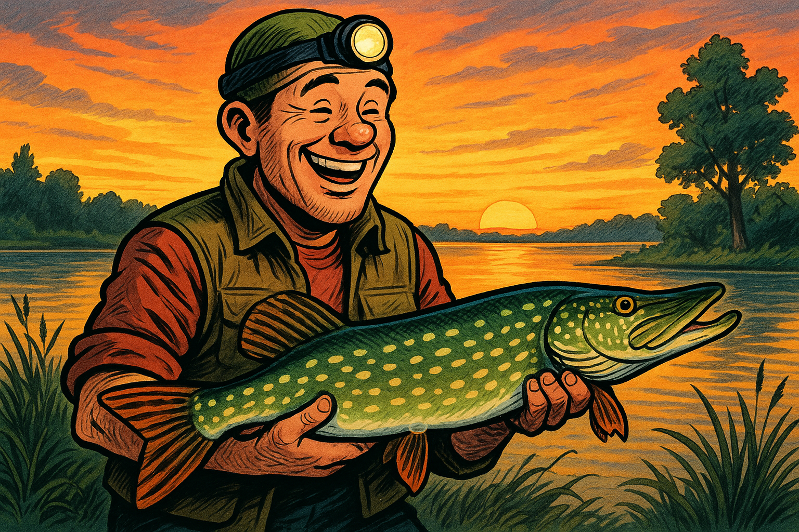

Bine ați venit pe website-ul meu!
Pagina mea este făcută pentru a vă informa în legătură cu speciile de pești răpitori existente în râurile din România.

Pagina mea este făcută pentru a vă informa în legătură cu speciile de pești răpitori existente în râurile din România.